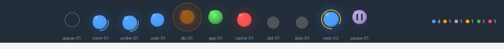
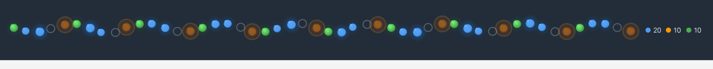

AI Swarm¶
The AI Swarm broadcasts one AI-agent task to many servers at once. Each selected server gets its own independent agent run over its SSH session, and the per-server answers are combined into a single comparison table — one row per server — in a shared conversation.
Open it with Tools > AI Swarm... or Ctrl+Alt+S (Cmd on macOS). The swarm opens as a regular tab, so terminals stay usable while a swarm runs.
The swarm tab¶
The tab is split into three areas:
| Area | Purpose |
|---|---|
| Status strip | Animated orb per agent above the conversation — live state overview |
| Agents | One row per server with status badge, elapsed time, token count, and an expandable live transcript |
| Conversation | The shared chat: your prompt, per-run progress, and the combined answer |
The composer at the bottom (Ask all selected servers…) is a clearly framed, three-line input. Send starts a run on every selected target; follow-up prompts continue the same conversation.
Selecting targets¶
Select servers… opens a picker over your saved connections. The target summary next to it shows how many servers are selected, how many already have an open terminal (Open: n), and how many will run without one (Without terminal: n).
Servers without an open terminal are fully supported: the swarm opens a background SSH session for them on demand — no terminal tab is opened or required. This needs the master-password vault to be unlocked (the stored credentials are used), and the server key is accepted on first contact, the same trust model the terminal uses for new connections. Connect missing (n) remains available as an explicit opt-in if you want terminals opened instead. Include local shell adds your local machine to the swarm (local shells always need their open tab and are excluded from headless runs).
Status strip¶
One orb per agent, colored and animated by state:

| State | Orb | Meaning |
|---|---|---|
| Queued | gray | Waiting for a free slot |
| Running | blue, pulsing with an orbiting dot | Agent is working; elapsed time ticks |
| Awaiting input | amber, blinking ring | An approval dialog is waiting for you |
| Paused | violet with pause bars | Paused via the run controls; the timer stops |
| Unusually long | blue with an amber ping ring | Running far longer than its peers (see below) |
| Done | green | Answer collected |
| Failed | red | The run errored; details are in the agent row |
| Cancelled / Skipped | dark gray | Stopped, or skipped (e.g. unsupported shell) |
Adaptive slow detection — an agent is flagged unusually long when its elapsed time exceeds max(60 s, 2 × median of the finished agents); until at least two agents have finished, a fixed 180 s threshold applies. Paused and waiting agents are never flagged, and paused time is subtracted from the elapsed time, so the comparison stays fair.
While a run is active, clicking an orb scrolls to and highlights that agent's row in the Agents list; hovering shows the server name and elapsed time. Legend chips below the orbs summarize the counts (running, waiting, paused, done, failed). After the run, the strip freezes at the final state.
The strip scales from a single server to large fleets — orbs shrink and pack into rows as the agent count grows:


Agent rows and live transcripts¶
Each server has a row in the Agents list showing its status badge, elapsed time, and token count. Left-click a row to expand it inline and watch the agent's live transcript (commands, output, and progress) while it runs — no extra window needed. Very long transcripts are trimmed from the front so the latest output is always visible.
Right-click a row for per-agent control: Pause, Resume, Restart, and Stop apply to that agent only. Restarting one agent does not disturb the others; its answer is replaced in the combined result.
Run control¶
The toolbar offers the same four controls for the whole swarm: Pause, Resume, Restart, and Stop. Pausing is cooperative — each agent pauses at its next safe checkpoint (the badge shows Pausing… until it takes effect), and elapsed timers stop while paused.
Read-only mode and approvals¶
The Read-only checkbox keeps every agent restricted to non-mutating commands. With read-only off, the Approval policy decides how system-changing commands are confirmed:
| Policy | Behavior |
|---|---|
| One approval for all | The first agent that needs a change raises one dialog; Approve on all covers every server in the run |
| Per server | Each server's changes are approved individually |
The approval dialog also offers Cancel swarm to stop the whole run.
Combined answer and row details¶
When all agents finish, the swarm combines the per-server answers into one Markdown comparison table with exactly one row per server. The last column is always titled "Fehler" and lists deviations, missing data, and errors (or - when there is nothing to report), regardless of the response language.
Table cells are often too small for full command output — click any table row to open it in a separate Row details window with a readable layout, A− / A+ font-size buttons, and a copy-to-clipboard button.
Conversation copy, export, and saving¶
The conversation header has a Copy button (whole conversation to the clipboard) and an Export menu with Plain text, Markdown, and PDF. Save stores the conversation as a named swarm chat; saved swarm chats appear in a dedicated Swarm Chats section of the AI Manager and can be reopened later.
Run scripts without AI¶
Run script… executes a Snippet Manager script on all swarm targets in parallel — without any AI involvement. The dialog offers a searchable script picker (by name, category, language, or ID), a parameter field (one parameter per line), and a live summary; the Run button is the single confirmation.
The script is transferred Base64-encoded (no quoting or special-character issues) and decoded on the server, with parameters passed as $1, $2, …. Progress appears in the same agent rows — expand a row to watch the live output — and the result is a per-server table with exit code and output. Non-POSIX shells (e.g. Windows targets) are skipped with a Skipped: shell is not POSIX note while the rest of the swarm proceeds; unreachable servers are reported as Not connected. Stop cancels a running script run.
Generate multi-server workflow¶
The Workflow button turns the current swarm task into a single reusable multi-server script via the Generate multi-server workflow dialog: choose the script language, the host-list source (selected connections, manual list, or external host file/inventory), and multi-server hardening options (parallel fan-out, per-host timeout, retry with backoff, aggregated end-of-run report, jump host, sudo/become, dry-run, and more).
The dialog includes:
- Syntax highlighting — the generated script is shown in a full editor with highlighting for the selected language.
- Visible progress — a working animation with a live elapsed counter (Generating… 0:42) while the AI works, and the total duration (Done — took 1:37) when it finishes.
- Additional instructions — a three-line field for extra guidance the AI must follow, with a History menu of your last 10 distinct entries.
- Save to Snippets — saves the script to the Snippet Manager with a fitting, pre-filled script name and the correct file extension.
- Hardening options — the same per-script Hardening options as the single-host workflow generator (strict mode, error traps, idempotency, dry-run,
--help, and more) are applied to the generated script automatically with their all-on defaults; this dialog shows no panel for them. They are separate from the multi-server options above. - Input hardening — a collapsible Input hardening panel asks the AI to build an input-validation guard block into the generated script (parameter allowlists and length limits, file format checks, an adjustable
MAX_FILE_SIZElimit, security warnings in the script's log, and aFORCE=1/--forceoverride). The size check uses metadata before file content is read, and0means unlimited. Strictly opt-in — the master check box starts unticked.
Tab activity indicator¶
The AI Swarm tab itself shows a colored status dot, so you can watch progress from any other tab:
| Dot | Meaning |
|---|---|
| Blue, pulsing | Swarm is running |
| Amber, fast pulse | An agent is waiting for your input |
| Violet, steady | Swarm is paused |
| Green, steady | Run finished — stays until the next run starts |
Scheduling swarm runs (JobScheduler)¶
Swarm runs can execute unattended as JobScheduler jobs using the AI Swarm action type. The Schedule… button in the swarm toolbar is the fastest path: it opens the JobScheduler with a new job pre-filled from the current tab — the selected servers, the current prompt, the AI profile, and the read-only setting. The job is created disabled so you can review the schedule before enabling it.
Scheduled swarm jobs run completely headless over background SSH sessions — no terminal tabs are opened. Swarm-specific job fields:
| Field | Description |
|---|---|
| AI profile | The AI profile used for all agents in the run |
| AI prompt | The task broadcast to every target server |
| Auto-approve | Approve system-changing commands without a dialog (unattended runs have nobody to ask) |
| Swarm parallelism | How many servers run concurrently (1–16, default 4) |
| Swarm read-only | Restrict all agents to non-mutating commands (default: on) |
Results land in two places: the job journal records the outcome per run, and the full conversation — including the combined comparison table — is stored as a saved swarm chat, so you can open it later from the AI Manager's Swarm Chats section and click through the result table like an interactive run. The scheduler's master-password and host-key gates apply as for other job types.
Recommended workflow: tune interactively, then schedule
Prompt quality decides result quality. Run the swarm interactively first, refine the prompt until the comparison table looks right, then click Schedule… — the tuned prompt and target list carry over into the job.
Typical combinations of swarm + scheduler:
- Nightly fleet health report — a read-only prompt like "Report disk usage, failed systemd units, and pending security updates" across all production servers every night; review the combined table each morning from the AI Manager.
- Configuration drift detection — ask for the effective settings of a service on every host; deviations stand out in the per-server rows and the Fehler column.
- Patch-level inventory — collect kernel and package versions across the fleet on a weekly schedule and export the resulting table.
Unattended changes
A scheduled swarm with read-only off and auto-approve on changes systems without anyone watching. Keep scheduled swarms read-only unless the prompt is deliberately designed (and tested interactively) to make changes.